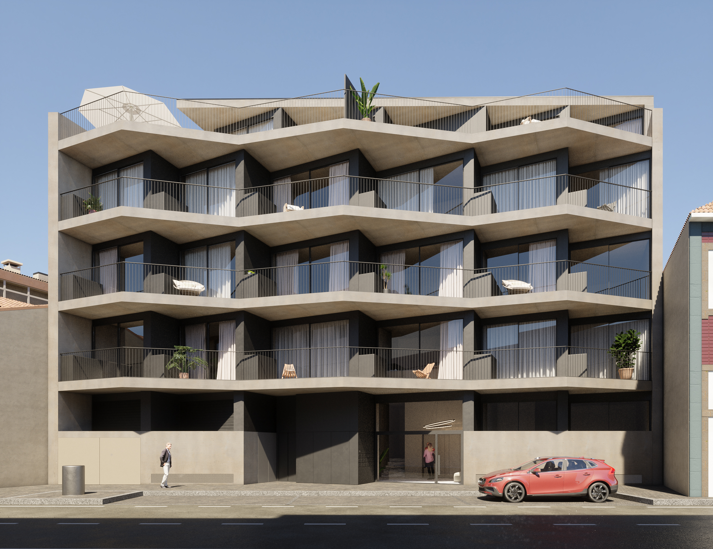

01 · Guacamaia
Construção civil
Execução de obras novas para habitação, comércio, serviços e hotelaria.
Para começar
Partilhe a localização, a utilização e a fase em que se encontra o projeto.
Preparar este pedidoPartilhe a localização, a utilização e a fase em que se encontra o projeto.